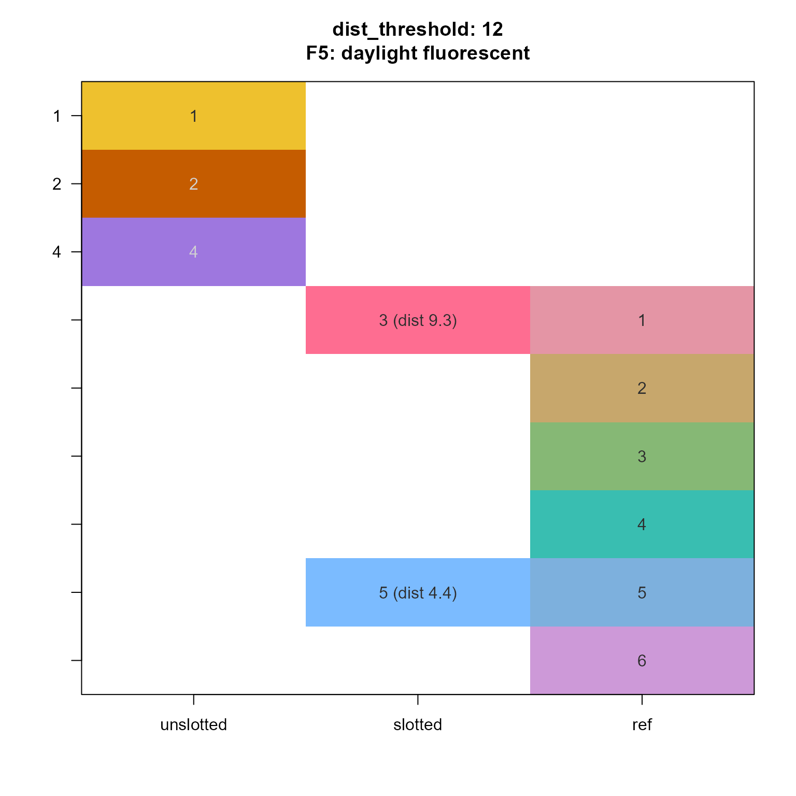
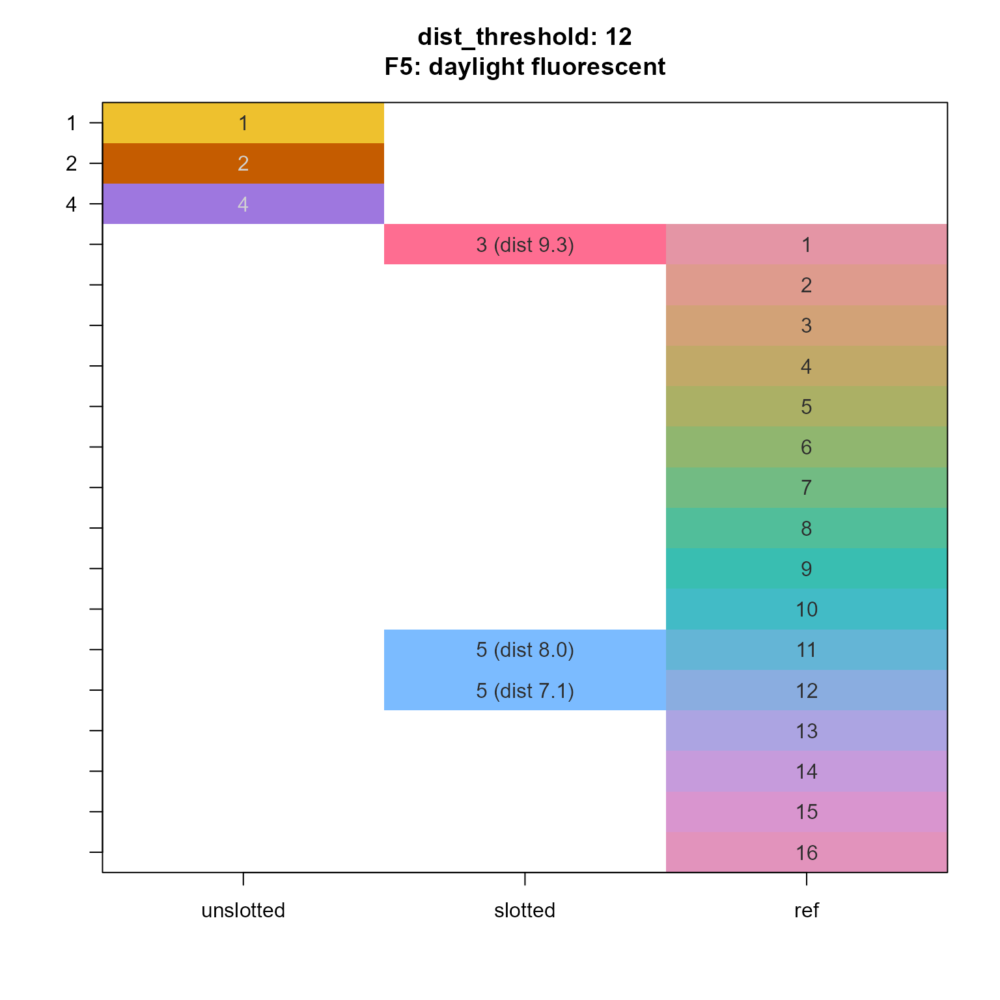

Slot a set of colors into a reference set of colors
Usage
slot_colors(
given_colors,
ref_colors,
dist_threshold = NULL,
min_distance = 11.5,
return_type = c("list", "vector"),
use_white = "F5",
method = "cie2000",
do_plot = FALSE,
verbose = FALSE,
...
)Arguments
- given_colors
charactervector of given colors to test versusref_colors. Colors ingiven_colorswhich are within the distance threshold of one or more colors inref_colorsare assigned (slotted) into those colors.- ref_colors
charactervector of reference colors.- dist_threshold
numericdefault NULL, with pre-defined color distance threshold.- min_distance
numericdefault 11.5 with a minimum distance to use, when the dynamic distance threshold is below this value, and whendist_thresholdis not provided.- return_type
characterstring, default 'list' with return type:'list': returns
listwith length(given_colors) andintegervalues of assigned colors inref_colors, orNAwhen no values inref_colorsare within the distance threshold.vector: returns vector equivalent of thelistoutput, flattened usingjamba::cPaste(). Values areNAor 'NA' for unslotted colors.
- use_white
characterdefault "F5" representing the white reference, any value recognized byfarver::as_white_ref().The default 'F5' represents 'daylight fluorescent' and in qualitative testing was most effective when defining color distances.
The typical default 'D65' is 'daylight 6500K' and is typically used for neutral daylight without blue (cool) or yellow (warm) shifted background lighting.
- method
characterdefault 'cie2000' passed tocolor_distance()- do_plot
logicaldefault FALSE, whether to plot a visual of the slot colors assignments.- verbose
logicalindicating whether to print verbose output.- ...
additional arguments are passed to internal functions
color_distance(), or whendo_plot==TRUE,imageByColors().
Value
list with length(given_colors) with integer vectors
referencing one or more elements in ref_colors, or NULL.
Details
The primary purpose is for add_colors() to determine whether
a given set of colors given_colors are already represented,
within a given color tolerance or distance,
within a reference set of colors ref_colors.
Colors are "slotted" into the corresponding reference colors, and un-slotted colors can be considered "not used" in the reference colors, and therefore they are available to be new colors to add to the set.
add_colors() is recommended for most users, since it applies the
logic by calling slot_colors() itself. However, for debugging,
in order to understand why certain colors are "slotted" and other
colors are not, slot_colors() may be useful to call directly,
especially with do_plot=TRUE for visual review.
Color distance metrics are imperfect, and do not represent
color blindness conditions effectively. Further, color distance
metrics are designed with different goals in mind. For example
the typical metrics are designed to ensure tolerance to a
standard color. They are not primarily designed to quantify
the magnitude of perceptible difference between two colors,
and this latter scenario is the primary motivation of
slot_colors() and add_colors().
See also
Other colorjam internal:
color_distance(),
find_color_spread(),
jam_pal(),
rainbowJam_v1(),
show_color_distance(),
vals2colorLevels()
Examples
given_colors <- rainbowJam(5)
ref_colors <- colorspace::rainbow_hcl(6)
slot_colors(given_colors, ref_colors, do_plot=TRUE)

given_colors <- rainbowJam(5)
ref_colors <- colorspace::rainbow_hcl(16)
slot_colors(given_colors, ref_colors, verbose=TRUE, do_plot=TRUE)
#> ## (16:19:50) 09Dec2025: slot_colors(): Determining color distance threshold.
#> ## (16:19:50) 09Dec2025: given_mean: 34.89435
#> ## (16:19:50) 09Dec2025: given_median: 33.82519
#> ## (16:19:50) 09Dec2025: ref_mean: 8.56522.9
#> ## (16:19:50) 09Dec2025: ref_median: 8.60055.4
#> ## (16:19:50) 09Dec2025: use_metric: 8.60055.4
#> ## (16:19:50) 09Dec2025: calc_threshold:3.44022.2
#> ## (16:19:50) 09Dec2025: dist_threshold:11.5
#> ## (16:19:50) 09Dec2025: slot_colors(): dist_threshold:11.5
